요즘 기업에서 AI 이야기를 하면 비슷한 장면이 반복됩니다. 새로운 AI 툴은 계속 등장하고, 이를 다루는 교육 프로그램도 빠르게 늘어나지만 교육이 끝난 뒤 현장으로 돌아가면, 실제로 일하는 방식이 크게 달라지지는 않았다고 합니다.
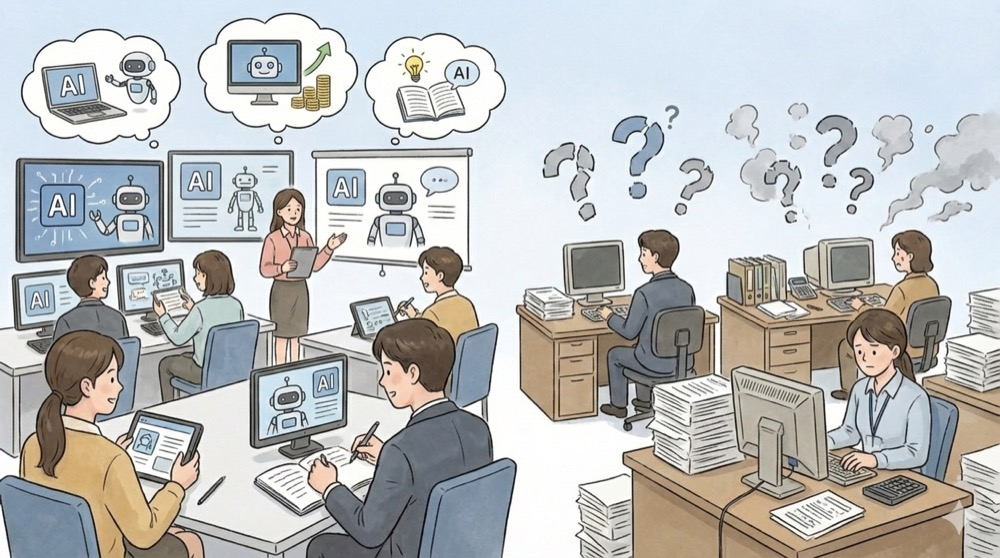
AI를 배웠다는 말은 나오지만, 어떤 업무가 줄었는지, 어떤 판단 기준이 바뀌었는지, 조직 차원에서 무엇이 달라졌는지는 여전히 불분명한 경우가 많습니다.
AI Native HRD 워크숍은 바로 이 지점에서 출발했습니다. AI를 ‘잘 쓰는 방법’을 하나 더 전달하기보다, AI가 조직 안으로 들어온 이후 HRD는 무엇을 다시 정의해야 하는지, 그리고 어디서부터 시작해야 하는지를 함께 고민해보는 자리를 만들고자 했습니다.
AI NATIVE HRD WORKSHOP - CIVIL WORK 2026년 1월 24일(토) 14:00 ~ 18:00 칠인더시네마 - 강남 삼성
AI Native HRD 워크숍이란
AI Native HRD 워크숍은 AI 네이티브 파트너 팀제이커브와HRD 석사생 커뮤니티 HON이 공동 기획·운영한 프로그램입니다.
단지 AI 도입 여부나 툴 활용법을 설명하는 교육이 아니라, AI 이후 HRD가 교육과 조직을 어떻게 다시 설계해야 하는지를 실제 HRD 업무 맥락에서 탐색하는 워크숍입니다.
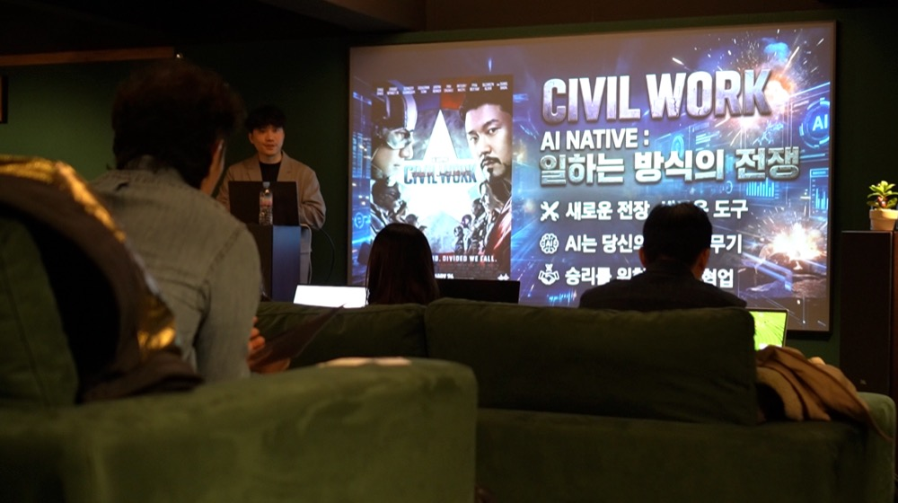
정답이나 성공 사례를 전달하기보다, 각 조직의 상황과 HRD 담당자가 마주한 질문을 출발점으로 삼아 직접 경험하고 토론하며 기준을 정리하는 방식으로 설계되었습니다.
HON HRD 커뮤니티
HON(HRDer Odyssey Network)는 HRD 석사 과정생·졸업생을 중심으로 모인 커뮤니티입니다. 단순히 정보를 주고받는 공간이 아니라, 각자의 조직에서 실제로 겪는 문제를 함께 언어로 정리하고, 현장 경험을 나누며 방향성을 모색하는 학습·연구 중심 커뮤니티입니다.
HON에서는 정기 모임, 소모임, 논문 설문·자료 공유 등 다양한 활동을 통해 HRD 실무자들이 서로의 고민과 사례를 깊게 나누고 있습니다. 이처럼 현장의 경험을 연구와 연결해 문제를 다시 정의하는 문화가 HON의 특징입니다.
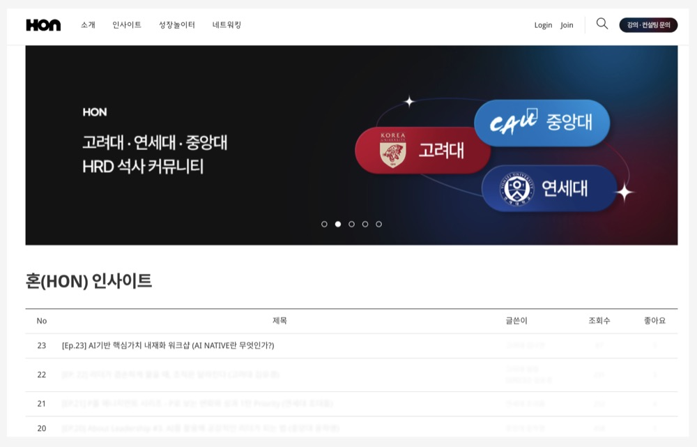
이번 AI Native HRD 워크숍은 AI와 HRD의 문제의식을 공유할 수 있는 HON과 함께했기에 표면적인 활용법이 아닌, HRD 관점의 깊이 있는 논의가 가능했습니다.
세션 1. AI Native 인식 전환: HRD가 가장 먼저 마주하는 질문
워크숍의 첫 세션에서는 AI 기술 자체보다 HRD가 마주하게 되는 질문을 먼저 꺼냈습니다. 조직 안에서 ‘AI Native’라는 말이 개인의 활용 능력을 의미하는지, 조직 차원의 전환 상태를 의미하는지에 대해 참여자마다 떠올리는 장면은 서로 달랐습니다.
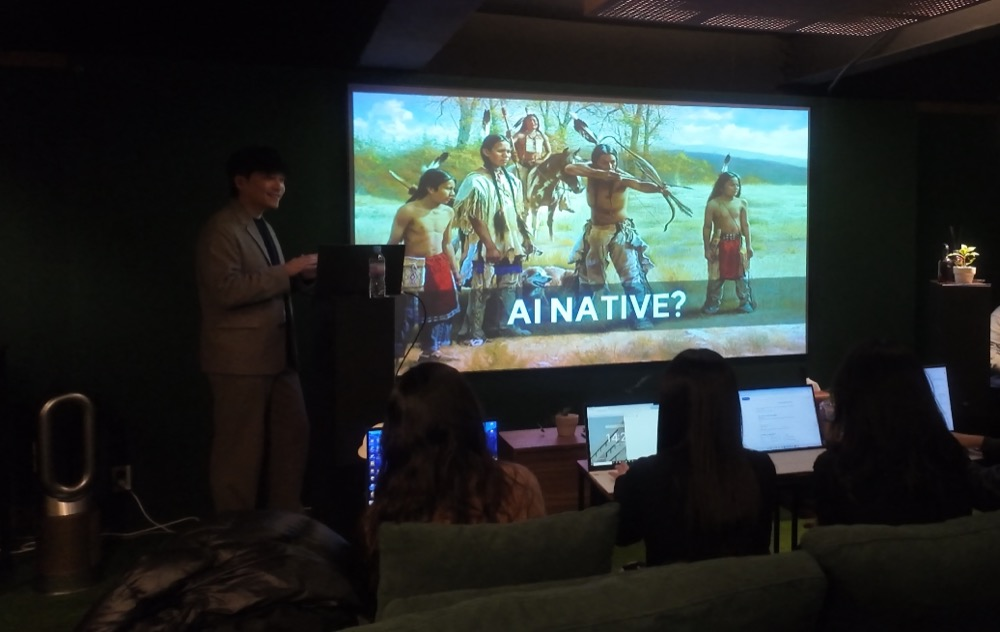
이 차이는 개념 이해의 문제라기보다 각 조직이 처한 환경과 역할이 다르다는 신호에 가깝습니다. 그래서 이 세션에서는 AI Native를 말로 정의하기보다, 같은 경험을 통해 기준을 맞추는 방식으로 흐름을 이어갔습니다.
경험으로 맞춰보는 기준: AI는 이미 업무 안에 들어와 있다
인식 전환 세션 안에서는 이미지 기반 퀴즈와 실제 사례를 활용해 AI가 이미 업무 안에서 어떻게 활용되고 있는지를 함께 살펴봤습니다. 실제 사람이 촬영한 사진과 AI가 생성한 이미지를 구분하는 과정에서 HRD참여자들은 판단이 점점 쉽지 않다는 반응을 보였습니다.
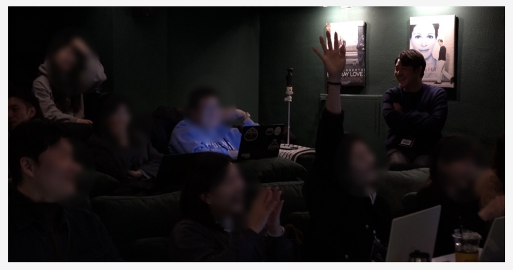
이를 통해AI 이미지가 실험 단계를 넘어 현업에서 충분히 활용 가능한 수준에 도달했음을 체감하는 계기가 되었습니다.
“막연히 불안했는데, 실제 결과물을 보니 오히려 적용을 안 하는 게 이상하다는 생각이 들었습니다.” - AI Native HRD Workshop 참여자 A
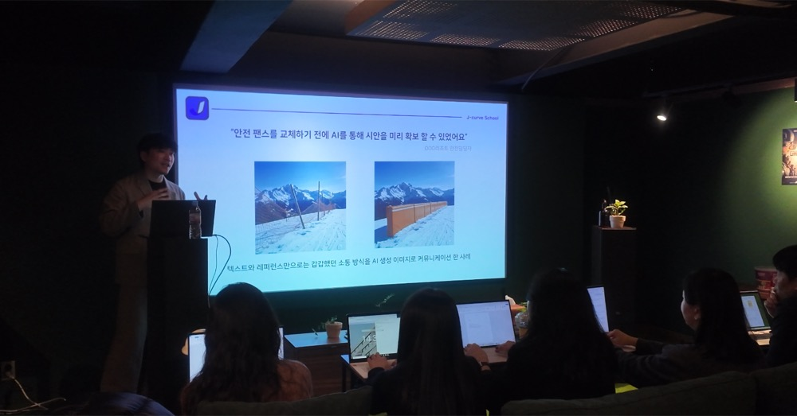
또 이어진 사례에서는 기존에 텍스트와 설명으로 공유하던 내용을 AI로 만든 이미지 시안으로 전달하면서 의사결정 속도가 눈에 띄게 빨라진 경험이 공유되었습니다.
세션 2. AI Native 방식의 교육 체험
두 번째 세션에서는 AI Native 관점에서 HRD 교육을 어떻게 설계하고 운영할 수 있는지를 직접 경험해보는 시간이 이어졌습니다. AI 코치의 도움을 받아 기사에 활용할 이미지 제작, 기사 작성, 팀별 비전송 제작까지 참여자들은 기술적으로 한 번도 해보지 않았던 작업을 직접 실행했습니다.
이 세션에서 중요한 것은 결과물의 완성도가 아니라, 교육이 어떤 방식으로 진행될 수 있는지를 체감하는 것이었습니다. 강의 중심이 아닌 실행 중심으로, AI는 보조 역할로 개입하고 참여자는 판단과 선택에 집중하는 구조였습니다.
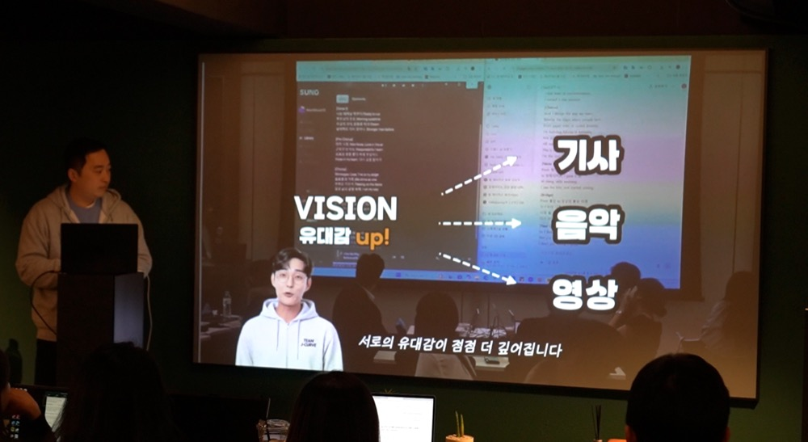
기사 작성과 비전송 제작까지의 실습이 끝난 뒤, 참여자들은 결과물을 보며 자연스럽게 같은 질문을 던지기 시작했습니다. 보고서 작성, 콘텐츠 정리처럼 반복되는 업무는 AI를 통해 자동화가 가능해졌지만, 그만큼 사람이 개입해야 할 판단의 기준은 오히려 더 중요해졌다는 의견이 나왔습니다.
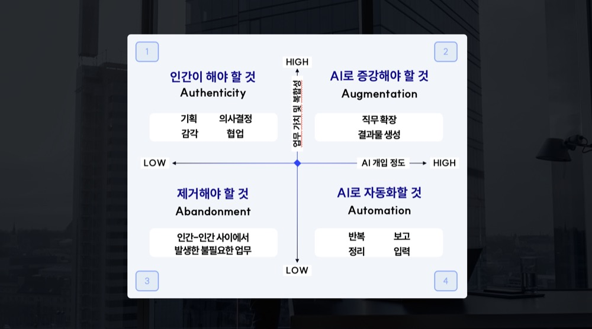
동시에 기획, 제작, 편집처럼 나뉘어 있던 업무가 AI를 통해 하나의 흐름으로 묶이면서 직무의 경계가 이전보다 빠르게 확장되고 있다는 인식도 공유되었습니다.
참여자들이 말한 AI HRD의 핵심 인사이트
토론과 네트워킹 과정에서 나온 이야기들은 각자의 조직과 역할은 달랐지만, HRD가 AI를 마주하며 공통적으로 겪고 있는 고민을 또렷하게 보여주었습니다.
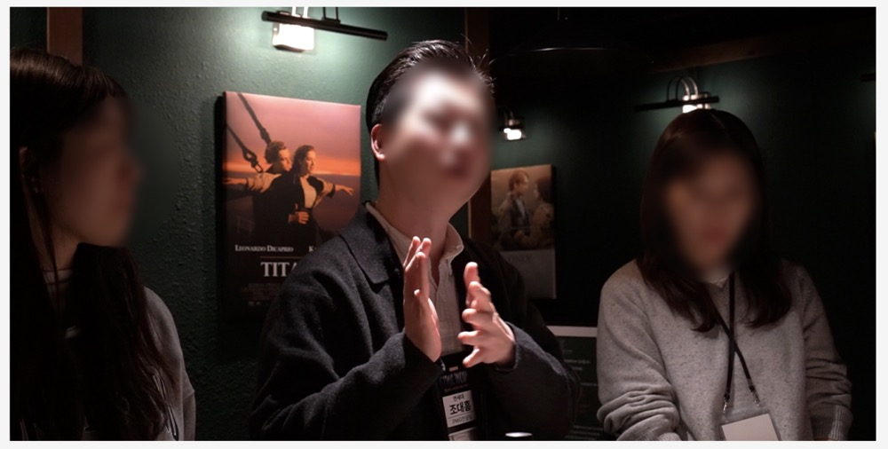
참여자들의 목소리는 세 가지 지점으로 모아졌습니다.
AI 도입의 필요성에는 이미 공감하고 있지만,어디서부터 시작해야 할지에 대한 기준은 여전히 모호하다는 점
AI 교육은 툴 사용법을 익히는 문제가 아니라, 조직의 태도와 문화를 함께 다뤄야 하는 변화 관리의 영역이라는 인식
AI 활용 결과를 두고무엇이 잘한 결과인지 설명하고 판단할 수 있는 조직 차원의 기준이 필요하다는 점
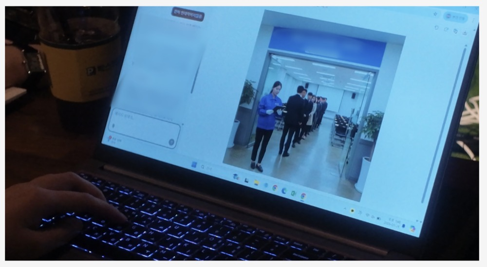
이 인사이트들은 AI HRD가 단순한 교육 과제가 아니라, 업무와 역할, 기준을 다시 설계하는 문제로 확장되고 있음을 보여줍니다.
“오늘 처음으로 AI로 기사도 쓰고 노래도 만들어봤는데, 이 경험 하나로 생각이 많이 바뀌었습니다.”
이 한 번의 경험이 AI를 ‘배워야 할 기술’이 아니라, ‘다시 설계해야 할 일의 방식’으로 인식하게 만드는 계기가 되었음을 여러 참여자들이 공통적으로 이야기했습니다.
AI Native HRD 워크숍이 남긴 것
AI Native HRD 워크숍은 정답을 제시하는 자리가 아닙니다. AI를 가르치는 역할에 머무를 것인지, 아니면 AI를 전제로 일과 조직을 다시 설계하는 역할로 확장할 것인지 그 질문 앞에 HRD가 함께 서보는 데까지를 목표로 하는 시간입니다.
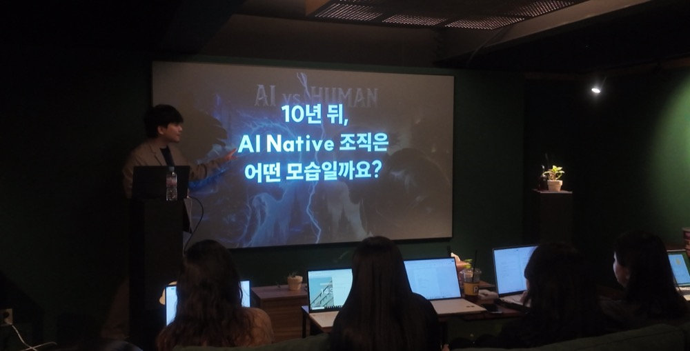
참여자들은 AI를 ‘도입해야 할 기술’이 아니라, HRD가 다시 기준을 세워야 할 변화의 조건으로 바라보기 시작했습니다.
이런 분들께 도움이 됩니다
기업 HRD / L&D 담당자
AI 워크숍, AI 기업교육 도입을 고민하는 조직
기존 AI 교육 방식에 한계를 느끼는 분들
AI HRD 사례를 찾고 있는 기획자와 리더
다음 단계가 궁금하시다면
AI Native HRD 워크숍은 단발성 교육이 아니라, 각 조직의 상황과 과제를 기준으로 다시 설계되는 구조를 전제로 만들어졌습니다.
AI를 어떻게 가르칠지보다, AI 이후 HRD가 어떤 역할을 해야 하는지를 조직 안에서 실제로 설계해보고 싶다면 팀 제이커브에게 지금 문의하세요
팀 제이커브는 AI를 도구가 아닌 일하는 방식의 변화로 구현하는 AI Native 파트너입니다.
요즘 기업에서 AI 이야기를 하면 비슷한 장면이 반복됩니다. 새로운 AI 툴은 계속 등장하고, 이를 다루는 교육 프로그램도 빠르게 늘어나지만
교육이 끝난 뒤 현장으로 돌아가면, 실제로 일하는 방식이 크게 달라지지는 않았다고 합니다.

AI를 배웠다는 말은 나오지만, 어떤 업무가 줄었는지, 어떤 판단 기준이 바뀌었는지, 조직 차원에서 무엇이 달라졌는지는 여전히 불분명한 경우가 많습니다.
AI Native HRD 워크숍은 바로 이 지점에서 출발했습니다. AI를 ‘잘 쓰는 방법’을 하나 더 전달하기보다, AI가 조직 안으로 들어온 이후 HRD는 무엇을 다시 정의해야 하는지, 그리고 어디서부터 시작해야 하는지를 함께 고민해보는 자리를 만들고자 했습니다.
AI NATIVE HRD WORKSHOP - CIVIL WORK
2026년 1월 24일(토)
14:00 ~ 18:00
칠인더시네마 - 강남 삼성
AI Native HRD 워크숍이란
AI Native HRD 워크숍은 AI 네이티브 파트너 팀제이커브와 HRD 석사생 커뮤니티 HON이 공동 기획·운영한 프로그램입니다.
단지 AI 도입 여부나 툴 활용법을 설명하는 교육이 아니라, AI 이후 HRD가 교육과 조직을 어떻게 다시 설계해야 하는지를 실제 HRD 업무 맥락에서 탐색하는 워크숍입니다.

정답이나 성공 사례를 전달하기보다, 각 조직의 상황과 HRD 담당자가 마주한 질문을 출발점으로 삼아 직접 경험하고 토론하며 기준을 정리하는 방식으로 설계되었습니다.
HON HRD 커뮤니티
HON(HRDer Odyssey Network)는 HRD 석사 과정생·졸업생을 중심으로 모인 커뮤니티입니다. 단순히 정보를 주고받는 공간이 아니라, 각자의 조직에서 실제로 겪는 문제를 함께 언어로 정리하고, 현장 경험을 나누며 방향성을 모색하는 학습·연구 중심 커뮤니티입니다.
HON에서는 정기 모임, 소모임, 논문 설문·자료 공유 등 다양한 활동을 통해 HRD 실무자들이 서로의 고민과 사례를 깊게 나누고 있습니다. 이처럼 현장의 경험을 연구와 연결해 문제를 다시 정의하는 문화가 HON의 특징입니다.

이번 AI Native HRD 워크숍은 AI와 HRD의 문제의식을 공유할 수 있는 HON과 함께했기에 표면적인 활용법이 아닌, HRD 관점의 깊이 있는 논의가 가능했습니다.
세션 1. AI Native 인식 전환:
HRD가 가장 먼저 마주하는 질문
워크숍의 첫 세션에서는 AI 기술 자체보다 HRD가 마주하게 되는 질문을 먼저 꺼냈습니다. 조직 안에서 ‘AI Native’라는 말이 개인의 활용 능력을 의미하는지, 조직 차원의 전환 상태를 의미하는지에 대해 참여자마다 떠올리는 장면은 서로 달랐습니다.

이 차이는 개념 이해의 문제라기보다 각 조직이 처한 환경과 역할이 다르다는 신호에 가깝습니다. 그래서 이 세션에서는 AI Native를 말로 정의하기보다, 같은 경험을 통해 기준을 맞추는 방식으로 흐름을 이어갔습니다.
경험으로 맞춰보는 기준: AI는 이미 업무 안에 들어와 있다
인식 전환 세션 안에서는 이미지 기반 퀴즈와 실제 사례를 활용해 AI가 이미 업무 안에서 어떻게 활용되고 있는지를 함께 살펴봤습니다. 실제 사람이 촬영한 사진과 AI가 생성한 이미지를 구분하는 과정에서 HRD참여자들은 판단이 점점 쉽지 않다는 반응을 보였습니다.

이를 통해AI 이미지가 실험 단계를 넘어 현업에서 충분히 활용 가능한 수준에 도달했음을 체감하는 계기가 되었습니다.

또 이어진 사례에서는 기존에 텍스트와 설명으로 공유하던 내용을 AI로 만든 이미지 시안으로 전달하면서 의사결정 속도가 눈에 띄게 빨라진 경험이 공유되었습니다.
세션 2. AI Native 방식의 교육 체험
두 번째 세션에서는 AI Native 관점에서 HRD 교육을 어떻게 설계하고 운영할 수 있는지를 직접 경험해보는 시간이 이어졌습니다. AI 코치의 도움을 받아 기사에 활용할 이미지 제작, 기사 작성, 팀별 비전송 제작까지 참여자들은 기술적으로 한 번도 해보지 않았던 작업을 직접 실행했습니다.
이 세션에서 중요한 것은 결과물의 완성도가 아니라, 교육이 어떤 방식으로 진행될 수 있는지를 체감하는 것이었습니다. 강의 중심이 아닌 실행 중심으로, AI는 보조 역할로 개입하고 참여자는 판단과 선택에 집중하는 구조였습니다.

기사 작성과 비전송 제작까지의 실습이 끝난 뒤, 참여자들은 결과물을 보며 자연스럽게 같은 질문을 던지기 시작했습니다. 보고서 작성, 콘텐츠 정리처럼 반복되는 업무는 AI를 통해 자동화가 가능해졌지만, 그만큼 사람이 개입해야 할 판단의 기준은 오히려 더 중요해졌다는 의견이 나왔습니다.

동시에 기획, 제작, 편집처럼 나뉘어 있던 업무가 AI를 통해 하나의 흐름으로 묶이면서 직무의 경계가 이전보다 빠르게 확장되고 있다는 인식도 공유되었습니다.
참여자들이 말한 AI HRD의 핵심 인사이트
토론과 네트워킹 과정에서 나온 이야기들은 각자의 조직과 역할은 달랐지만, HRD가 AI를 마주하며 공통적으로 겪고 있는 고민을 또렷하게 보여주었습니다.

참여자들의 목소리는 세 가지 지점으로 모아졌습니다.

이 인사이트들은 AI HRD가 단순한 교육 과제가 아니라, 업무와 역할, 기준을 다시 설계하는 문제로 확장되고 있음을 보여줍니다.
이 한 번의 경험이 AI를 ‘배워야 할 기술’이 아니라, ‘다시 설계해야 할 일의 방식’으로 인식하게 만드는 계기가 되었음을 여러 참여자들이 공통적으로 이야기했습니다.
AI Native HRD 워크숍이 남긴 것
AI Native HRD 워크숍은 정답을 제시하는 자리가 아닙니다. AI를 가르치는 역할에 머무를 것인지, 아니면 AI를 전제로 일과 조직을 다시 설계하는 역할로 확장할 것인지 그 질문 앞에 HRD가 함께 서보는 데까지를 목표로 하는 시간입니다.

참여자들은 AI를 ‘도입해야 할 기술’이 아니라, HRD가 다시 기준을 세워야 할 변화의 조건으로 바라보기 시작했습니다.
이런 분들께 도움이 됩니다
다음 단계가 궁금하시다면
AI Native HRD 워크숍은
단발성 교육이 아니라,
각 조직의 상황과 과제를 기준으로
다시 설계되는 구조를 전제로 만들어졌습니다.
AI를 어떻게 가르칠지보다,
AI 이후 HRD가 어떤 역할을 해야 하는지를
조직 안에서 실제로 설계해보고 싶다면
팀 제이커브에게 지금 문의하세요
팀 제이커브는
AI를 도구가 아닌
일하는 방식의 변화로 구현하는
AI Native 파트너입니다.
문의하기